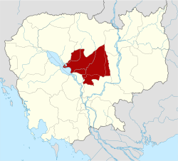

និរុត្តិសាស្ត្រ និងប្រវត្តិ
ឈ្មោះសៀមរាប (សៀមរាប) មានន័យថា "ចាញ់សៀម" យោង
ជម្លោះអតីតកាលជាមួយប្រទេសថៃ។ តាមប្រវត្តិសាស្ត្រទីក្រុងទទួលបាន
សារៈសំខាន់នៅក្នុងសតវត្សទី 19 នៅពេលដែលអ្នករុករកបារាំងបានចងក្រងជាឯកសារ
ប្រាសាទអង្គរដែលបាក់បែក ដែលនាំទៅដល់ការខិតខំជួសជុល និង
ការទទួលស្គាល់អន្តរជាតិ។
សេដ្ឋកិច្ច និងទេសចរណ៍
សេដ្ឋកិច្ចខេត្តសៀមរាបពឹងផ្អែកខ្លាំងលើវិស័យទេសចរណ៍ជាង ៥០%
នៃការងារដែលភ្ជាប់ទៅនឹងឧស្សាហកម្ម។ នៅឆ្នាំ 2012 ការមកដល់របស់ភ្ញៀវទេសចរមាន
លើសពីពីរលាន។ ទីក្រុងបានអភិវឌ្ឍបដិសណ្ឋារកិច្ចរឹងមាំ
វិស័យដែលមានសណ្ឋាគារប្រណីត ទីផ្សារប្រពៃណី និងរស់រវើក
ជីវិតពេលយប់។
ការទាក់ទាញសំខាន់ៗ
ប្រាសាទអង្គរវត្ត និងអង្គរធំ - ទីតាំងប្រាសាទដែលល្បីល្បាញបំផុតនៅក្នុង
ប្រទេសកម្ពុជា។
សារមន្ទីរ – សារមន្ទីរជាតិអង្គរ និងសារមន្ទីរសង្គ្រាម
ប្រទេសកម្ពុជាបង្ហាញពីប្រវត្តិសាស្ត្រដ៏សម្បូរបែបក្នុងតំបន់។
បទពិសោធន៍វប្បធម៌
- ការសម្តែងរបាំអប្សរាប្រពៃណី និងសិក្ខាសាលាសិប្បករនៅ
សិប្បករអង្គរ។
បឹងទន្លេសាប – ផ្ទះរបស់ភូមិបណ្តែតទឹក និង
សត្វព្រៃចម្រុះ។
អាហារូបត្ថម្ភ
សៀមរាបគឺជាមជ្ឈមណ្ឌលធ្វើម្ហូប ដែលមានភោជនីយដ្ឋានល្បីៗដូចជា
ស្ករត្នោត ស្ថានទូត និងម្ហូបការ វត្តដំណាក់។ ឯកទេសក្នុងស្រុក
រួមមានប្រហុក (ទឹកត្រីប្រហុក) និងអង្ករសំបៃ
ស្រាដែលបំផុសគំនិតដោយរសជាតិប្រពៃណីខ្មែរ។